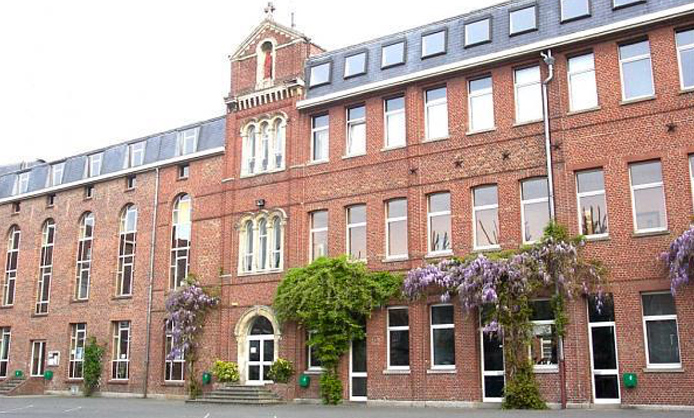

Cursus
BUT informatique 2022 - En cours
Etablissement

IUT A - Université de Lille
Listes des compétences enseignées au sein de la formation.
Réaliser un développement d'application.
Optimiser des applications informatiques.
Administrer des systèmes informatiques communicants complexes.
Gérer des donnéees de l'information.
Conduire un projet.
Travailler dans une équipe informatique.
Baccaulréat Technologique STI2D 2022
Etablissement

Lycée Fréderic Ozanam - Lille
Durant cette année de terminal j'ai pu faire mes premiers pas en informatique grâce à l'option SIN de la formation.